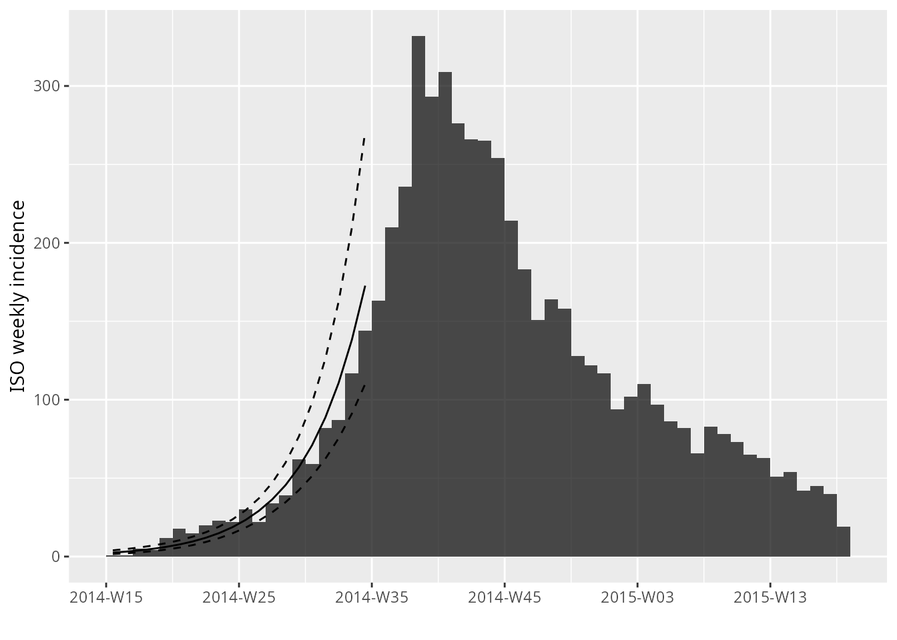
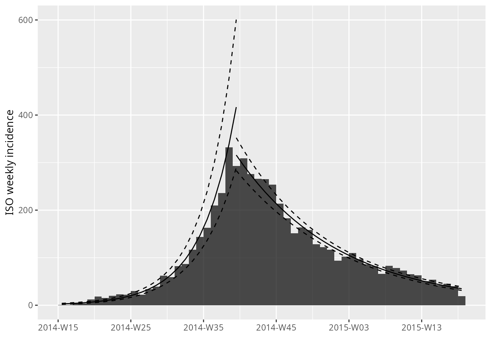
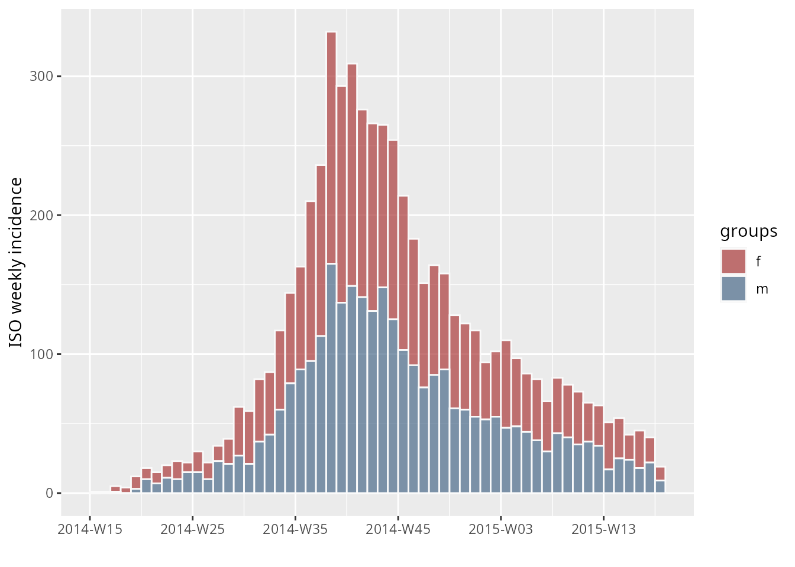
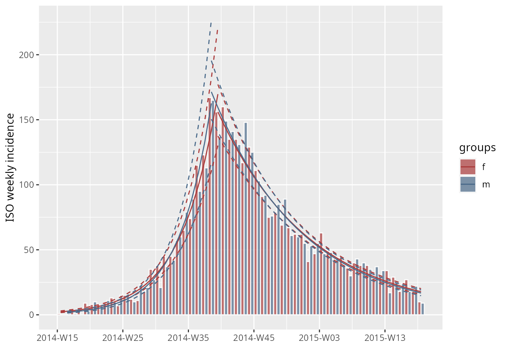
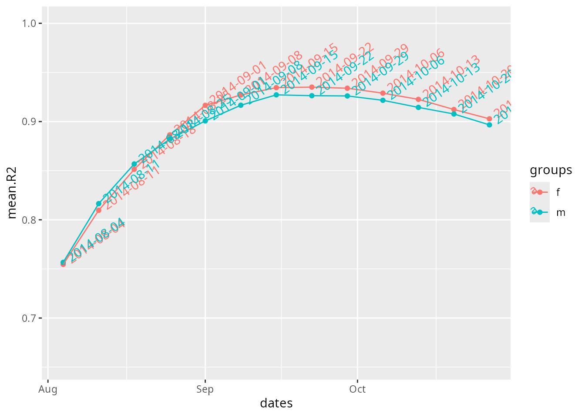

Details of the incidence_fit class
Zhian N. Kamvar
2025-06-19
Source:vignettes/incidence_fit_class.Rmd
incidence_fit_class.RmdThis vignette details the structure and construction of the
incidence_fit and incidence_fit_list classes,
which are produced by the fit() and
fit_optim_split() functions, respectively. By the end of
this tutorial, you should be able to construct
incidence_fit and incidence_fit_list objects
for use with your own models.
Structure of an incidence_fit object
An incidence_fit object contains three elements:
-
$model: The model fit to anincidenceobject. Currently, this represents a log-linear model, but it can be any model. -
$info: Information derived from the model-
rThe growth rate -
r.confthe confidence interval ofr -
preda data frame containing the predictions of the model using the true dates (dates), their numeric version used in the model (dates.x), the predicted value (fit), and the lower (lwr) and upper (upr) bounds of the associated confidence interval. -
doublingthe predicted doubling time in days (only ifris positive) -
doubling.confthe confidence interval of the doubling time -
halvingthe predicted halving time in days (only ifris negative) -
halving.confthe confidence interval of the halving time
-
-
$origin: the date corresponding to day ‘0’
Internally, when fit() is run, these elements are
constructed by function incidence:::extract_info(). First
we need to setup data. We will use simulated Ebola outbreak data from
the outbreaks package over weekly intervals and calculate the
fit for the first 20 weeks:
library(outbreaks)
library(incidence)
dat <- ebola_sim$linelist$date_of_onset
i <- incidence(dat, interval = "week")
i
#> <incidence object>
#> [5888 cases from days 2014-04-07 to 2015-04-27]
#> [5888 cases from ISO weeks 2014-W15 to 2015-W18]
#>
#> $counts: matrix with 56 rows and 1 columns
#> $n: 5888 cases in total
#> $dates: 56 dates marking the left-side of bins
#> $interval: 1 week
#> $timespan: 386 days
#> $cumulative: FALSE
f <- fit(i[1:20])
f
#> <incidence_fit object>
#>
#> $model: regression of log-incidence over time
#>
#> $info: list containing the following items:
#> $r (daily growth rate):
#> [1] 0.03175771
#>
#> $r.conf (confidence interval):
#> 2.5 % 97.5 %
#> [1,] 0.02596229 0.03755314
#>
#> $doubling (doubling time in days):
#> [1] 21.8261
#>
#> $doubling.conf (confidence interval):
#> 2.5 % 97.5 %
#> [1,] 18.45777 26.69823
#>
#> $pred: data.frame of incidence predictions (20 rows, 5 columns)
plot(i, fit = f)
As you can see, the incidence_fit object has a print
method and a plot method. If you want to access individual elements in
the $info element, you can use the get_info()
function:
get_info(f, "r")
#> [1] 0.03175771
get_info(f, "r.conf")
#> 2.5 % 97.5 %
#> [1,] 0.02596229 0.03755314
get_info(f, "doubling.conf")
#> 2.5 % 97.5 %
#> [1,] 18.45777 26.69823This will be important later when we combine several
incidence_fit objects into a single
incidence_fit_list.
Building an incidence_fit object from scratch
The incidence_fit object can be constructed from any
model from which you can derive the daily growth rate, doubling/halving
times, predictions, and confidence intervals. The following three steps
show roughly how it is done from model fitting to construction.
Step 1: create the model
The default model for fit() is a log-linear model on the
intervals between dates. To fit this model, we will need to create a
data frame with the counts and the midpoints of the intervals:
# ensure all dates have at least one incidence
i2 <- i[1:20]
i2 <- i2[apply(get_counts(i2), 1, min) > 0]
df <- as.data.frame(i2, long = TRUE)
df$dates.x <- get_dates(i2, position = "center", count_days = TRUE)
head(df)
#> dates weeks isoweeks counts dates.x
#> 1 2014-04-07 2014-W15 2014-W15 1 3.5
#> 2 2014-04-14 2014-W16 2014-W16 1 10.5
#> 3 2014-04-21 2014-W17 2014-W17 5 17.5
#> 4 2014-04-28 2014-W18 2014-W18 4 24.5
#> 5 2014-05-05 2014-W19 2014-W19 12 31.5
#> 6 2014-05-12 2014-W20 2014-W20 18 38.5
lm1 <- stats::lm(log(counts) ~ dates.x, data = df)
lm1
#>
#> Call:
#> stats::lm(formula = log(counts) ~ dates.x, data = df)
#>
#> Coefficients:
#> (Intercept) dates.x
#> 0.81660 0.03176If we compare that to the $model element produced from
fit(), we can see that it is identical:
all.equal(f$model, lm1)
#> [1] TRUEStep 2: creation of the $info list:
The $info list is created directly from the model
itself:
r <- stats::coef(lm1)["dates.x"]
r.conf <- stats::confint(lm1, "dates.x", 0.95)
new.data <- data.frame(dates.x = sort(unique(lm1$model$dates.x)))
pred <- exp(stats::predict(lm1, newdata = new.data, interval = "confidence",
level = 0.95))
pred <- cbind.data.frame(new.data, pred)
info_list <- list(
r = r,
r.conf = r.conf,
doubling = log(2) / r,
doubling.conf = log(2) / r.conf,
pred = pred
)
info_list
#> $r
#> dates.x
#> 0.03175771
#>
#> $r.conf
#> 2.5 % 97.5 %
#> dates.x 0.02596229 0.03755314
#>
#> $doubling
#> dates.x
#> 21.8261
#>
#> $doubling.conf
#> 2.5 % 97.5 %
#> dates.x 26.69823 18.45777
#>
#> $pred
#> dates.x fit lwr upr
#> 1 3.5 2.528815 1.611099 3.969283
#> 2 10.5 3.158367 2.082082 4.791013
#> 3 17.5 3.944645 2.687383 5.790104
#> 4 24.5 4.926668 3.463102 7.008763
#> 5 31.5 6.153167 4.453513 8.501484
#> 6 38.5 7.685004 5.711842 10.339797
#> 7 45.5 9.598194 7.300398 12.619220
#> 8 52.5 11.987674 9.289763 15.469105
#> 9 59.5 14.972017 11.757263 19.065771
#> 10 66.5 18.699315 14.786028 23.648299
#> 11 73.5 23.354529 18.467024 29.535566
#> 12 80.5 29.168662 22.905640 37.144163
#> 13 87.5 36.430229 28.231348 47.010209
#> 14 94.5 45.499570 34.607028 59.820534
#> 15 101.5 56.826734 42.236196 76.457588
#> 16 108.5 70.973805 51.369116 98.060497
#> 17 115.5 88.642805 62.309665 126.104782
#> 18 122.5 110.710519 75.424156 162.505217
#> 19 129.5 138.272012 91.152689 209.748604
#> 20 136.5 172.694966 110.023332 271.065700Step 3: combine lists and create object
the last step is to combine everything into a list and create the object.
origin <- min(get_dates(i2))
info_list$pred$dates <- origin + info_list$pred$dates.x
the_fit <- list(
lm = lm1,
info = info_list,
origin = min(get_dates(i2))
)
class(the_fit) <- "incidence_fit"
the_fit
#> <incidence_fit object>
#>
#> $model: regression of log-incidence over time
#>
#> $info: list containing the following items:
#> $r (daily growth rate):
#> dates.x
#> 0.03175771
#>
#> $r.conf (confidence interval):
#> 2.5 % 97.5 %
#> dates.x 0.02596229 0.03755314
#>
#> $doubling (doubling time in days):
#> dates.x
#> 21.8261
#>
#> $doubling.conf (confidence interval):
#> 2.5 % 97.5 %
#> dates.x 26.69823 18.45777
#>
#> $pred: data.frame of incidence predictions (20 rows, 5 columns)
plot(i, fit = the_fit)
Structure of an incidence_fit_list object
There are several reasons for having multiple fits to a single
incidence object. One may want to have a separate fit for
different groups represented in the object, or one may want to split the
fits at the peak of the epidemic. To aid in plotting and summarizing the
different fits, we’ve created the incidence_fit_list class.
This class has two defining features:
- It consists of a named list containing one or more
incidence_fitobjects or lists containingincidence_fitobjects. - An attribute called “locations” contains a list whose length is
equal to the number of
incidence_fitobjects in the object. Each list element contains a vector that defines where anincidence_fitobject is within theincidence_fit_list.
The reason for this structure is because it is sometimes necessary to
nest lists of incidence_fit objects within lists. When this
happens, accessing individual elements of the objects cumbersome. To
alleviate this, each object has a distinct path within the named list in
the “locations” attribute that allows one to access the object directly
since R allows you to traverse the elements of a nested list by
subsetting with a vector:
l <- list(a = list(b = 1, c = 2),d = list(e = list(f = 3, g = 4), h = 5))
str(l)
#> List of 2
#> $ a:List of 2
#> ..$ b: num 1
#> ..$ c: num 2
#> $ d:List of 2
#> ..$ e:List of 2
#> .. ..$ f: num 3
#> .. ..$ g: num 4
#> ..$ h: num 5
l[[c("a", "b")]]
#> [1] 1
l[[c("d", "e", "f")]]
#> [1] 3Example: A tale of two fits
The function fit_optim_split() attempts to find the
optimal split point in an epicurve, producing an
incidence_fit_list object in the $fit element
of the returned list:
fl <- fit_optim_split(i)
fl$fit
#> <list of incidence_fit objects>
#>
#> attr(x, 'locations'): list of vectors with the locations of each incidence_fit object
#>
#> 'before'
#> 'after'
#>
#> $model: regression of log-incidence over time
#>
#> $info: list containing the following items:
#> $r (daily growth rate):
#> before after
#> 0.02982209 -0.01016191
#>
#> $r.conf (confidence interval):
#> 2.5 % 97.5 %
#> before 0.02608945 0.033554736
#> after -0.01102526 -0.009298561
#>
#> $doubling (doubling time in days):
#> before
#> 23.24274
#>
#> $doubling.conf (confidence interval):
#> 2.5 % 97.5 %
#> before 20.65721 26.5681
#>
#> $halving (halving time in days):
#> after
#> 68.21031
#>
#> $halving.conf (confidence interval):
#> 2.5 % 97.5 %
#> after 62.86899 74.54349
#>
#> $pred: data.frame of incidence predictions (57 rows, 6 columns)
plot(i, fit = fl$fit)
Here you can see that the object looks very similar to the
incidence_fit object, but it has extra information. The
first thing you may notice is the fact that both “doubling” and
“halving” are shown. This is because the two fits have different signs
for the daily growth rate. The second thing you may notice is the fact
that there is something called attr(x, 'locations'). This
attribute gives the location of the incidence_fit objects
within the list. We can illustrate how this works if we look at the
structure of the object:
str(fl$fit, max.level = 2)
#> List of 2
#> $ before:List of 3
#> ..$ model :List of 12
#> .. ..- attr(*, "class")= chr "lm"
#> ..$ info :List of 5
#> ..$ origin: Date[1:1], format: "2014-04-07"
#> ..- attr(*, "class")= chr "incidence_fit"
#> $ after :List of 3
#> ..$ model :List of 12
#> .. ..- attr(*, "class")= chr "lm"
#> ..$ info :List of 5
#> ..$ origin: Date[1:1], format: "2014-09-22"
#> ..- attr(*, "class")= chr "incidence_fit"
#> - attr(*, "locations")=List of 2
#> ..$ : chr "before"
#> ..$ : chr "after"
#> - attr(*, "class")= chr "incidence_fit_list"Internally, all of the methods for incidence_fit_list
use the ‘locations’ attribute to navigate:
methods(class = "incidence_fit_list")
#> [1] get_fit get_info plot print
#> see '?methods' for accessing help and source codeFor example, it’s often useful to extract the growth rate for all
models at once. The get_info() method allows us to do this
easily:
get_info(fl$fit, "r")
#> before after
#> 0.02982209 -0.01016191
get_info(fl$fit, "r.conf")
#> 2.5 % 97.5 %
#> before 0.02608945 0.033554736
#> after -0.01102526 -0.009298561Because doubling or halving is determined by whether or not
r is negative, we automatically filter out the results that
don’t make sense, but you can include them with
na.rm = FALSE:
Example: Nested incidence_fit
Above, we showed the example of a basic
incidence_fit_list class with two objects representing the
fits before and after the peak of an epicurve. However, it is often
useful evaluate fits for different groups separately. Here, we will
construct an incidence object, but define groups by gender:
gen <- ebola_sim$linelist$gender
ig <- incidence(dat, interval = "week", group = gen)
plot(ig, border = "grey98")
Now if we calculate an optimal fit split, we will end up with four different fits: two for each defined gender.
fg <- fit_optim_split(ig)
plot(ig, fit = fg$fit, border = "grey98", stack = FALSE)
#> Scale for colour is already present.
#> Adding another scale for colour, which will replace the existing scale.
#> Scale for colour is already present.
#> Adding another scale for colour, which will replace the existing scale.
#> Scale for colour is already present.
#> Adding another scale for colour, which will replace the existing scale.
#> Scale for colour is already present.
#> Adding another scale for colour, which will replace the existing scale.
If we look at the fit object, we can see again that it is an
incidence_fit_list but this time with four fits
defined.
fg$fit
#> <list of incidence_fit objects>
#>
#> attr(x, 'locations'): list of vectors with the locations of each incidence_fit object
#>
#> 'f', 'before'
#> 'm', 'before'
#> 'f', 'after'
#> 'm', 'after'
#>
#> $model: regression of log-incidence over time
#>
#> $info: list containing the following items:
#> $r (daily growth rate):
#> f_before m_before f_after m_after
#> 0.02570604 0.02883607 -0.01002297 -0.01038307
#>
#> $r.conf (confidence interval):
#> 2.5 % 97.5 %
#> f_before 0.02289333 0.028518743
#> m_before 0.02502254 0.032649606
#> f_after -0.01102735 -0.009018595
#> m_after -0.01138910 -0.009377034
#>
#> $doubling (doubling time in days):
#> f_before m_before
#> 26.96437 24.03750
#>
#> $doubling.conf (confidence interval):
#> 2.5 % 97.5 %
#> f_before 24.30497 30.27725
#> m_before 21.22988 27.70091
#>
#> $halving (halving time in days):
#> f_after m_after
#> 69.15586 66.75746
#>
#> $halving.conf (confidence interval):
#> 2.5 % 97.5 %
#> f_after 62.85711 76.85756
#> m_after 60.86059 73.91966
#>
#> $pred: data.frame of incidence predictions (111 rows, 7 columns)
str(fg$fit, max.level = 3)
#> List of 2
#> $ f:List of 2
#> ..$ before:List of 3
#> .. ..$ model :List of 12
#> .. .. ..- attr(*, "class")= chr "lm"
#> .. ..$ info :List of 5
#> .. ..$ origin: Date[1:1], format: "2014-04-07"
#> .. ..- attr(*, "class")= chr "incidence_fit"
#> ..$ after :List of 3
#> .. ..$ model :List of 12
#> .. .. ..- attr(*, "class")= chr "lm"
#> .. ..$ info :List of 5
#> .. ..$ origin: Date[1:1], format: "2014-09-22"
#> .. ..- attr(*, "class")= chr "incidence_fit"
#> ..- attr(*, "locations")=List of 2
#> .. ..$ : chr "before"
#> .. ..$ : chr "after"
#> ..- attr(*, "class")= chr "incidence_fit_list"
#> $ m:List of 2
#> ..$ before:List of 3
#> .. ..$ model :List of 12
#> .. .. ..- attr(*, "class")= chr "lm"
#> .. ..$ info :List of 5
#> .. ..$ origin: Date[1:1], format: "2014-04-14"
#> .. ..- attr(*, "class")= chr "incidence_fit"
#> ..$ after :List of 3
#> .. ..$ model :List of 12
#> .. .. ..- attr(*, "class")= chr "lm"
#> .. ..$ info :List of 5
#> .. ..$ origin: Date[1:1], format: "2014-09-15"
#> .. ..- attr(*, "class")= chr "incidence_fit"
#> ..- attr(*, "locations")=List of 2
#> .. ..$ : chr "before"
#> .. ..$ : chr "after"
#> ..- attr(*, "class")= chr "incidence_fit_list"
#> - attr(*, "locations")=List of 4
#> ..$ : chr [1:2] "f" "before"
#> ..$ : chr [1:2] "m" "before"
#> ..$ : chr [1:2] "f" "after"
#> ..$ : chr [1:2] "m" "after"
#> - attr(*, "class")= chr "incidence_fit_list"Notice that the nested lists themselves are of class
incidence_fit_list.
Now, even though the fits within nested lists, the ‘locations’
attributes still defines where they are within the object so that the
get_info() function still operates normally:
get_info(fg$fit, "r.conf")
#> 2.5 % 97.5 %
#> f_before 0.02289333 0.028518743
#> m_before 0.02502254 0.032649606
#> f_after -0.01102735 -0.009018595
#> m_after -0.01138910 -0.009377034If you need to access all the fits easily, a convenience function to
flatten the list is available in get_fit():
str(get_fit(fg$fit), max.level = 2)
#> List of 4
#> $ f_before:List of 3
#> ..$ model :List of 12
#> .. ..- attr(*, "class")= chr "lm"
#> ..$ info :List of 5
#> ..$ origin: Date[1:1], format: "2014-04-07"
#> ..- attr(*, "class")= chr "incidence_fit"
#> $ m_before:List of 3
#> ..$ model :List of 12
#> .. ..- attr(*, "class")= chr "lm"
#> ..$ info :List of 5
#> ..$ origin: Date[1:1], format: "2014-04-14"
#> ..- attr(*, "class")= chr "incidence_fit"
#> $ f_after :List of 3
#> ..$ model :List of 12
#> .. ..- attr(*, "class")= chr "lm"
#> ..$ info :List of 5
#> ..$ origin: Date[1:1], format: "2014-09-22"
#> ..- attr(*, "class")= chr "incidence_fit"
#> $ m_after :List of 3
#> ..$ model :List of 12
#> .. ..- attr(*, "class")= chr "lm"
#> ..$ info :List of 5
#> ..$ origin: Date[1:1], format: "2014-09-15"
#> ..- attr(*, "class")= chr "incidence_fit"Because all that defines an incidence_fit_list is the
class definition and the ‘locations’ attribute that defines the
positions of the incidence_fit objects within the nesting,
then it’s also possible to define the output of
fit_optim_split() as an incidence_fit_list
class:
print(locs <- attributes(fg$fit)$locations)
#> [[1]]
#> [1] "f" "before"
#>
#> [[2]]
#> [1] "m" "before"
#>
#> [[3]]
#> [1] "f" "after"
#>
#> [[4]]
#> [1] "m" "after"
for (i in seq_along(locs)) {
locs[[i]] <- c("fit", locs[[i]])
}
print(locs)
#> [[1]]
#> [1] "fit" "f" "before"
#>
#> [[2]]
#> [1] "fit" "m" "before"
#>
#> [[3]]
#> [1] "fit" "f" "after"
#>
#> [[4]]
#> [1] "fit" "m" "after"
fg.ifl <- fg
attributes(fg.ifl)$locations<- locs
class(fg.ifl) <- "incidence_fit_list"Now when we print the object, we can see that it prints only the
information related to the incidence_fit_list:
fg.ifl
#> <list of incidence_fit objects>
#>
#> attr(x, 'locations'): list of vectors with the locations of each incidence_fit object
#>
#> 'fit', 'f', 'before'
#> 'fit', 'm', 'before'
#> 'fit', 'f', 'after'
#> 'fit', 'm', 'after'
#>
#> $model: regression of log-incidence over time
#>
#> $info: list containing the following items:
#> $r (daily growth rate):
#> fit_f_before fit_m_before fit_f_after fit_m_after
#> 0.02570604 0.02883607 -0.01002297 -0.01038307
#>
#> $r.conf (confidence interval):
#> 2.5 % 97.5 %
#> fit_f_before 0.02289333 0.028518743
#> fit_m_before 0.02502254 0.032649606
#> fit_f_after -0.01102735 -0.009018595
#> fit_m_after -0.01138910 -0.009377034
#>
#> $doubling (doubling time in days):
#> fit_f_before fit_m_before
#> 26.96437 24.03750
#>
#> $doubling.conf (confidence interval):
#> 2.5 % 97.5 %
#> fit_f_before 24.30497 30.27725
#> fit_m_before 21.22988 27.70091
#>
#> $halving (halving time in days):
#> fit_f_after fit_m_after
#> 69.15586 66.75746
#>
#> $halving.conf (confidence interval):
#> 2.5 % 97.5 %
#> fit_f_after 62.85711 76.85756
#> fit_m_after 60.86059 73.91966
#>
#> $pred: data.frame of incidence predictions (111 rows, 7 columns)But, we still retain all of the extra information in the list:
str(fg.ifl, max.level = 1)
#> List of 4
#> $ df :'data.frame': 26 obs. of 3 variables:
#> $ split: Date[1:2], format: "2014-09-22" "2014-09-15"
#> ..- attr(*, "names")="f" "m"
#> $ fit :List of 2
#> ..- attr(*, "locations")=List of 4
#> ..- attr(*, "class")= chr "incidence_fit_list"
#> $ plot :List of 11
#> ..- attr(*, "class")= chr [1:2] "gg" "ggplot"
#> - attr(*, "locations")=List of 4
#> - attr(*, "class")= chr "incidence_fit_list"
fg.ifl$split
#> f m
#> "2014-09-22" "2014-09-15"
fg.ifl$df
#> dates mean.R2 groups
#> 1 2014-08-04 0.7546016 f
#> 2 2014-08-11 0.8096672 f
#> 3 2014-08-18 0.8513743 f
#> 4 2014-08-25 0.8864424 f
#> 5 2014-09-01 0.9165063 f
#> 6 2014-09-08 0.9270248 f
#> 7 2014-09-15 0.9345352 f
#> 8 2014-09-22 0.9350323 f
#> 9 2014-09-29 0.9339121 f
#> 10 2014-10-06 0.9288956 f
#> 11 2014-10-13 0.9226037 f
#> 12 2014-10-20 0.9122727 f
#> 13 2014-10-27 0.9027890 f
#> 14 2014-08-04 0.7566712 m
#> 15 2014-08-11 0.8164693 m
#> 16 2014-08-18 0.8567850 m
#> 17 2014-08-25 0.8820669 m
#> 18 2014-09-01 0.9006668 m
#> 19 2014-09-08 0.9166004 m
#> 20 2014-09-15 0.9271862 m
#> 21 2014-09-22 0.9263339 m
#> 22 2014-09-29 0.9260695 m
#> 23 2014-10-06 0.9216350 m
#> 24 2014-10-13 0.9144120 m
#> 25 2014-10-20 0.9077086 m
#> 26 2014-10-27 0.8966333 m
fg.ifl$plot